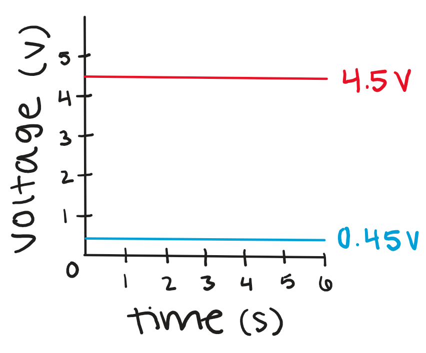

For this assignment, I used 2 photoresistors to change the brightness of a blue and red LED and a button that has to be pressed for either of them to turn on at all.
max voltage: 5 V
max current: 0.02 A
V = I × R
voltage drop: 1.8 V
5 V - 1.8 V = 3.2 V
3.2 V = 0.02 A × R
3.2 V / 0.02 A = R
voltage drop: 3.3 V
5 V - 3.3 V = 1.7 V
1.7 V = 0.02 A × R
1.7 V / 0.02 A = R
I used a 220 Ω resistor for the red LEDs and 100 Ω resistors for the blue LEDs because those were the closest resistor values I had to the calculations.
1,000 Ω < R1 < 100,000 Ω
5 V × (
5 V × (
Note: I used 220 Ω resistors for the photoresistors in my circuit because I was sick so I missed class on Wednesday and I wasn't sure how to calculate the appropriate resistance to use until after I had built the circuit. For a 220 Ω resistor, the voltage would be a much lower range than the calculations show (0.9 V - 0.01 V), so it would have been better to use a 10K Ω resistor.
For the button, I used a 10K Ω resistor because that is what we used in class to make sure it was a good balance and it wasn't too high or too low.
// set the pin number that the red LED is connected to
int redPin = 10;
// set the pin number that the photoresistor used for the red LED is connected to
int redSensor = A0;
// set the initial value of the sensor used for the red LED to 0
int redValue = 0;
// set the brightness value for the red LED to 0
int redBrightness = 0;
// set the pin number that the blue LED is connected to
int bluePin = 5;
// set the pin number that the photoresistor used for the blue LED is connected to
int blueSensor = A1;
// set the initial value of the sensor used for the blue LED to 0
int blueValue = 0;
// set the brightness value for the red LED to 0
int blueBrightness = 0;
// set the button initial value for the button as low (not pressed)
int buttonState = LOW;
// complete once at the beginning
void setup() {
// begin the serial communication
Serial.begin(9600);
// set the pin connected to the red LED as an output
pinMode(redPin, OUTPUT);
// set the pin connected to the blue LED as an output
pinMode(bluePin, OUTPUT);
// set pin 2 (connected to the button) as an input
pinMode(2, INPUT);
}
// repeat infinitely
void loop() {
// read pin 2 (connected to the button) to determine if the button is pressed
buttonState = digitalRead(2);
// check if buttonState is HIGH (button is pressed)
if (buttonState == HIGH) {
// change the brightness of the red LED based on the value from the photoresistor for the red LED
adjustBrightness("red", redPin, redSensor, redValue, redBrightness);
// change the brightness of the blue LED based on the value from the photoresistor for the blue LED
adjustBrightness("blue", bluePin, blueSensor, blueValue, blueBrightness);
// otherwise, the button is not pressed
} else {
// set the red LED to off
analogWrite(redPin, 0);
// set the blue LED to off
analogWrite(bluePin, 0);
}
}
// function to adjust the brightness of an LED based on the value from the sensor
void adjustBrightness(String ledColor, int ledPin, int ledSensor, int ledValue, int ledBrightness) {
// read the value of the sensor (how much light there is)
ledValue = analogRead(ledSensor);
// print out (to the serial monitor) the color of the LED
Serial.print(ledColor );
// print out (to the serial monitor) the words "sensor value:"
Serial.print(" sensor value: ");
// print out (to the serial monitor) the value of the sensor
Serial.println(ledValue);
// determine the value of the LED brightness based on the value of the sensor (brighter if there is more light, dimmer if there is less light)
ledBrightness = map(ledValue, 0, 1023, 0, 255);
// set the brightness of the LED
analogWrite(ledPin, ledBrightness);
}When the photoresistor is used as R1:
5 V × (10,000 Ω / (1,000 Ω + 10,000 Ω)) = 4.5 V
5 V × (10,000 Ω / (100,000 Ω + 10,000 Ω)) = 0.45 V
When the photoresistor is used as R2:
5 V × (1,000 Ω / (10,000 Ω + 1,000 Ω)) = 0.45 V
5 V × (100,000 Ω / (10,000 Ω + 100,000 Ω)) = 4.5 V
The variable resistor could be either R1 or R2. If R1 and R2 were switched, the voltage range would be the same, the values would just be opposite. This means that instead of the LED getting brighter when the photoresistor senses more light, the LED would get dimmer and vice versa.
This graph shows both the maximum and the minimum voltage measured by either photoresistor in my circuit. For most of the time, the actual value measured would vary in between both of these values.
